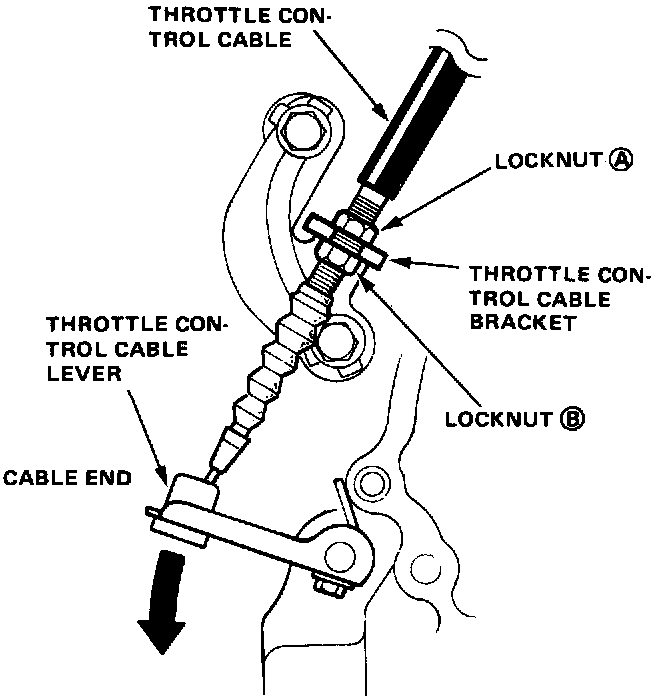
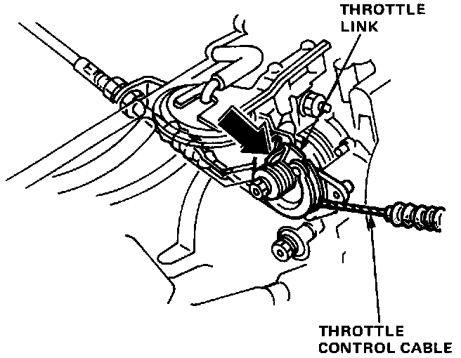
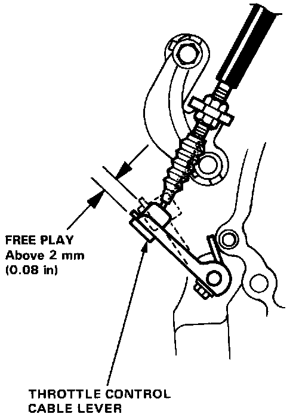

Throttle Valve Cable/Linkage: Adjustments
Throttle Control Cable Adjustment/InspectionNOTE: Correct "Fine Tune" adjustment of the throttle control cable is critical for proper operation of the transmission and lock-up torque convertor.
1. Loosen locknuts (A) and (B) on the throttle control cable.

2. Press down as shown on the throttle control lever until it stops.

3. While pressing down on the throttle control lever, pull on the throttle link to check the amount of throttle control cable free play.
Remove all throttle control cable free play by gradually turning lock nut "A".
Until no movement can be felt in the throttle link, while continuing to press down on the throttle control lever, pull open the throttle link.
The control lever should begin to move at precisely the same time as the link.

4. Check the following items before starting the engine:
Depress the accelerator to the floor. While depressed check that there is play in the throttle control lever.
- Check that the cable moves freely by depressing the accelerator.